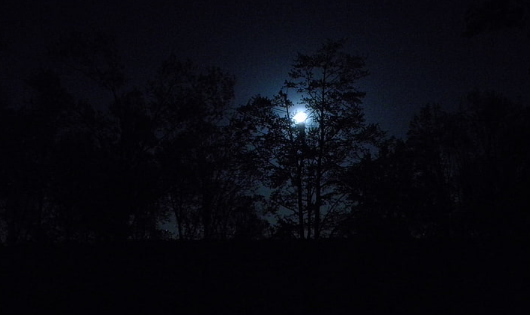

Mientras Mike camina por el sendero, se percata que los ruidos se vuelven más y más recios.
Después de caminar por varios minutos, Mike se percata que no hay forma de regresar por el mismo camino. La noche se ha vuelto muy
oscura, y no se puede ver la salida del bosque. Mike se siente atrapado por la oscuridad, pero sigue caminando adelante.
Finalmente, Mike llega al final del sendero, y puede ver el fondo del barranco, el origen de los ruidos.
La noche es tan oscura que no se puede ver claramente lo que hay en el fondo, y Mike se siente asustado y cansado.
Es momento de decidir qué debería hacer Mike a continuación.